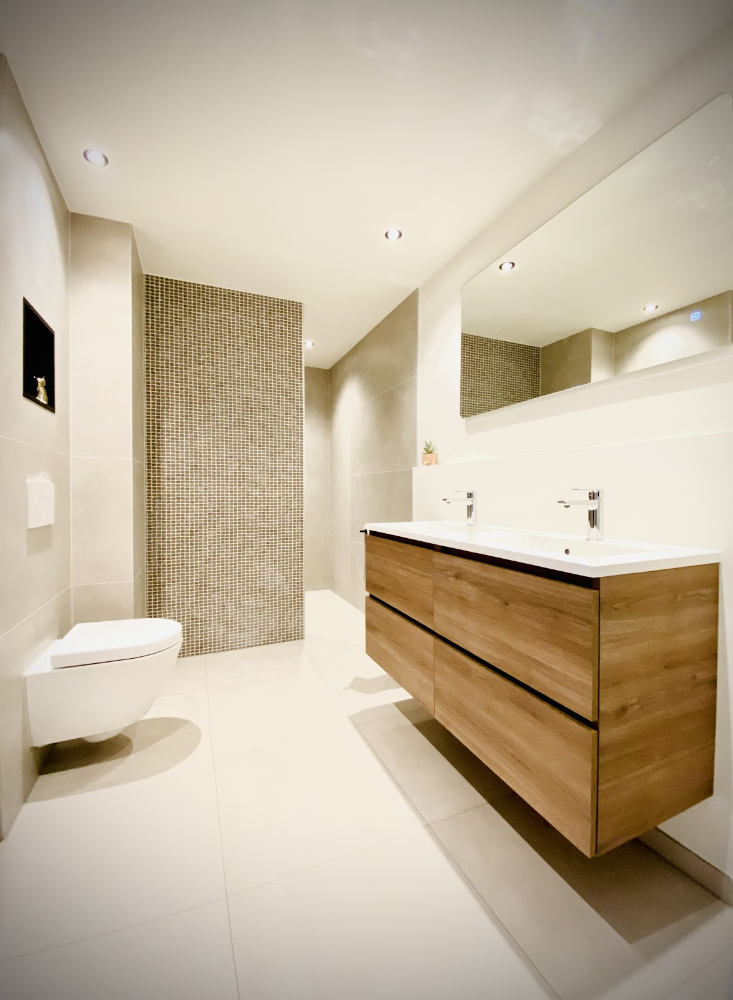
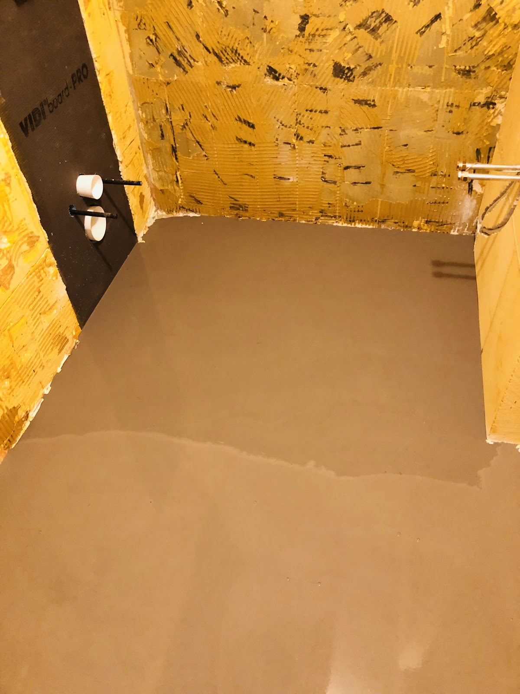
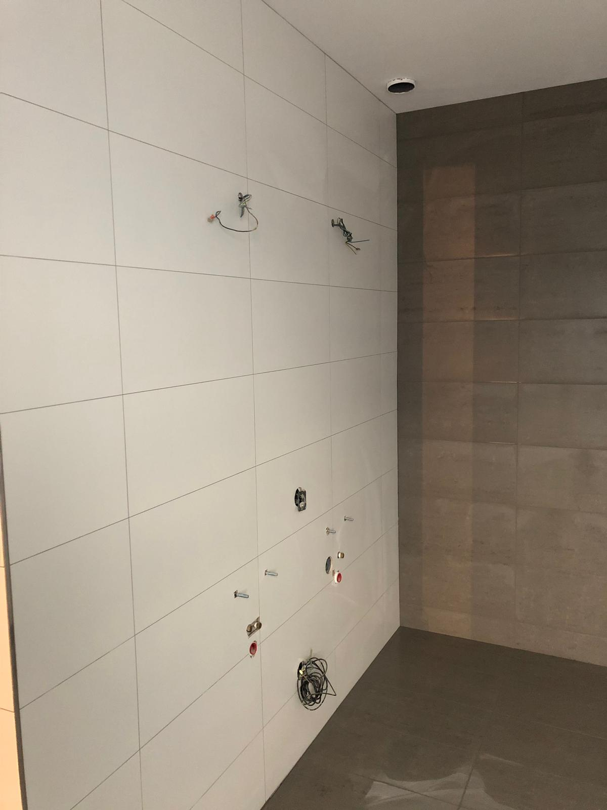
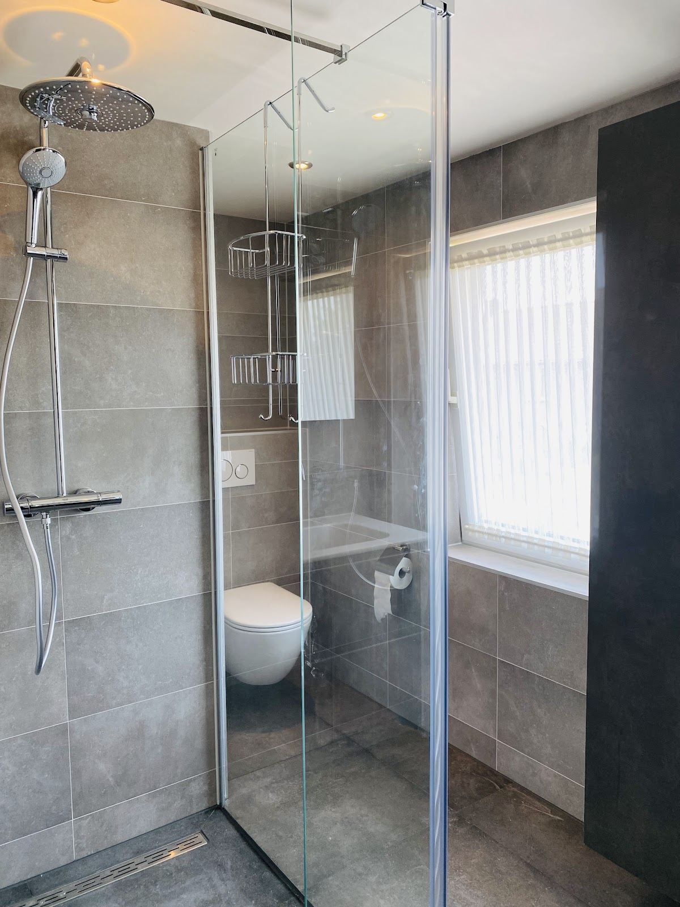
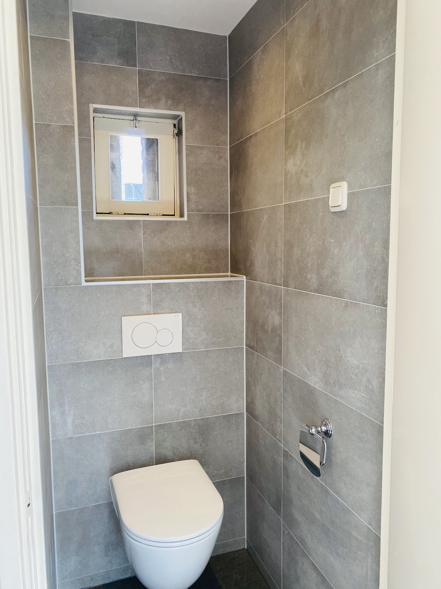
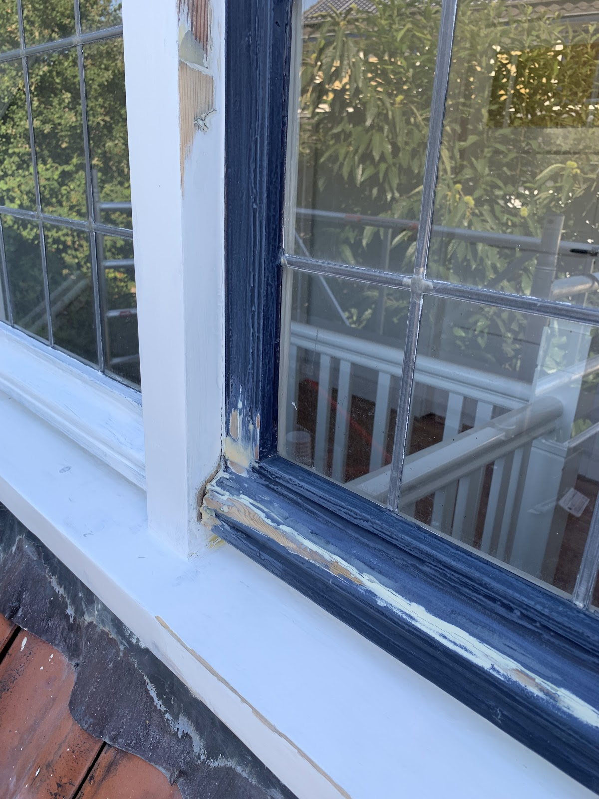
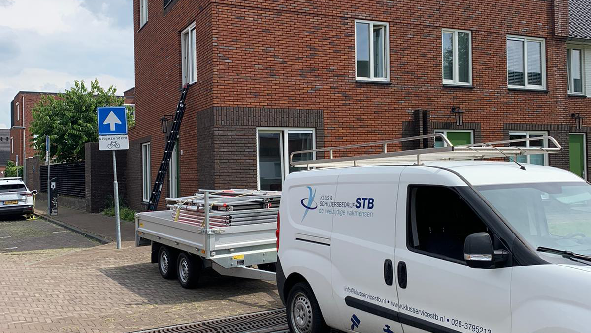

Loodgieter, elektricien, cv‑monteur en schilder. Eén vast aanspreekpunt.
Met Klusservice STB haalt u in één keer alle vakmensen in huis die een badkamer, toilet of verbouwing nodig heeft. Installatie, reparatie én onderhoud, netjes uitgevoerd in Arnhem en omgeving.
4,9 van 5 op Google, uit 9 reviews. Bereikbaar maandag tot en met vrijdag, 08:00 tot 17:00.

Van kale vloer tot afgewerkte badkamer
Leidingwerk, elektra, tegelwerk en afwerking doen we zelf. Daardoor hoeft u niet te schakelen tussen drie bedrijven en loopt de planning door.
-

Stap 1
Strippen en voorbereiden
Oude tegels eruit, leidingen en afvoeren op de juiste plek, de vloer egaal.
-

Stap 2
Tegelen en aansluiten
Wanden en vloer betegeld, aansluitingen voor water en elektra klaar om af te monteren.
-

Stap 3
Afmonteren en opleveren
Sanitair, douche en verlichting erin. Netjes afgekit en schoon opgeleverd.
Van alle markten thuis
Klussen is een wijd begrip. Van schilderwerk tot betegelen, van keuken- tot badkamersanitair. Weet u niet zeker of wij kunnen helpen? Bel gerust even.

- Renovatie
- Badkamers, toiletten, keukenmontage en tegelwerk. Van het verplaatsen van leidingen tot het laatste kitnaadje.
- Installatie
- Loodgieterswerk, elektra en cv. Een nieuwe ketel, een nieuwe meterkast of leidingwerk voor uw keuken: installatie, reparatie én onderhoud kunt u aan ons overlaten.
- Schilderwerk
-
Binnen en buiten. Eerst goed schuren en voorbereiden, dan pas verven. Alles wordt keurig afgeplakt en afgedekt.

- Overig
- Grotere verbouwingen stemmen we af met vaste vakmensen, zoals een stukadoor. U houdt één aanspreekpunt.
Klein bedrijf, korte lijnen
Veelzijdig
Wij zijn thuis in elk onderdeel van het proces, van leidingwerk tot de laatste laag verf.
Kleinschalig
Dat is onze grote kracht. Zo kunnen we extra secuur te werk gaan.
Eén contactpersoon
U heeft één vaste contactpersoon. Zo voorkomen we onduidelijkheid en worden afspraken nagekomen.
4,9 van 5 op Google, uit 9 reviews
“Wij zijn erg tevreden over het werk wat is geleverd door Klusservice STB. Onze badkamer is zeer professioneel verbouwd voor een schappelijke prijs. Werken netjes, zijn vriendelijk en betrouwbaar. Kortom: een aanrader!”
“STB heeft onze badkamer gerenoveerd. Prettige communicatie en goed advies. Wat problemen gehad met de levering van het meubel en sanitair door de leverancier. STB heeft hier bijzonder flexibel op ingespeeld.”
“STB heeft bij mij de badkamer en het toilet gerenoveerd. Goed advies. Prettig in de communicatie. Fijne en betrouwbare vakmensen, die afspraken nakomen. Door omstandigheden was het schilderwerk iets vertraagd. Dit is door de schilder later snel en professioneel opgepakt. Zeer tevreden over STB!”
“Bjorn en Stefan hebben bij ons de badkamer en het toilet beneden vernieuwd en ook een nieuwe CV geplaatst. We zijn blij met het resultaat, het eindresultaat is mooi strak en ze werken netjes.”
“Bjorn heeft jaren geleden als 17-jarige jongen al bij ons een nieuwe stoppenkast en elektra aangelegd. Hier waren wij toen al erg tevreden over. Vorig jaar kwamen we via Facebook weer met hem en Stefan in contact. Vandaag hebben ze bij ons een nieuwe ketel geplaatst. Ook dit is perfect gedaan. Bjorn is iemand die met je meedenkt en rekening houdt met je wensen.”
“Wij hebben een 3 tal projecten door STB laten uitvoeren. Het verbouwen van de badkamer, het verbouwen van een bestaand toilet op de bg. en het schilderen van een plafond. De werkzaamheden zijn naar volle tevredenheid uitgevoerd.”
Herkent u ons busje? Dan zijn we in de buurt.
